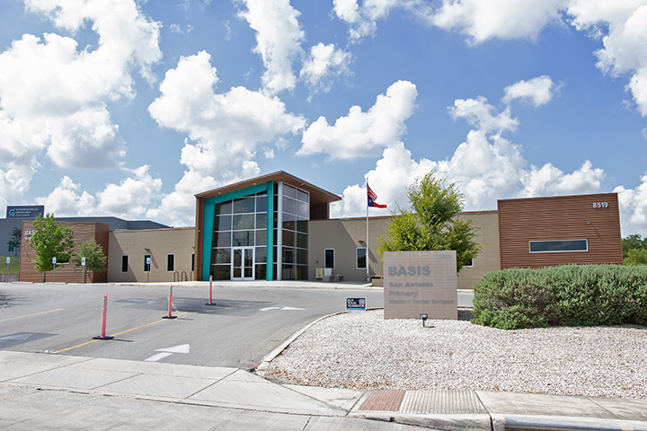
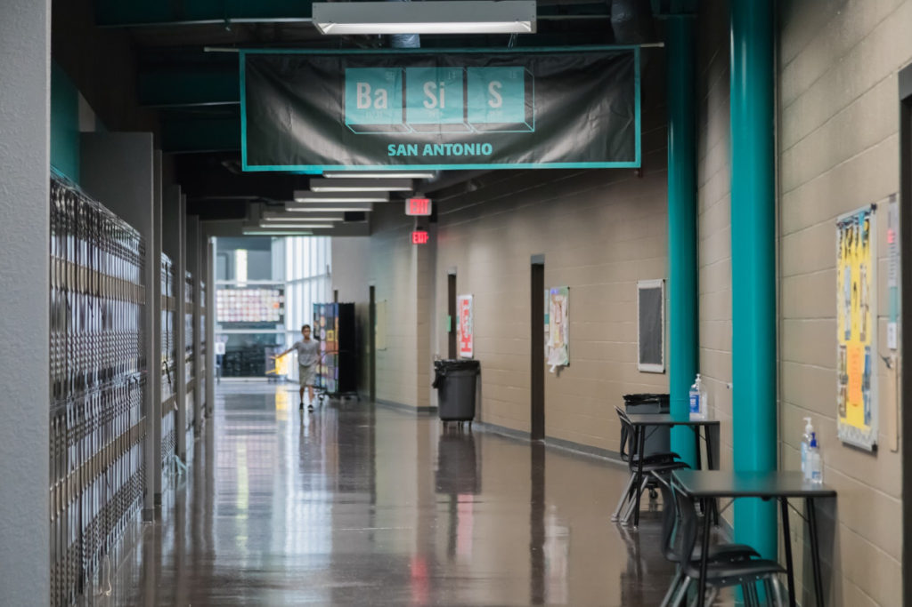
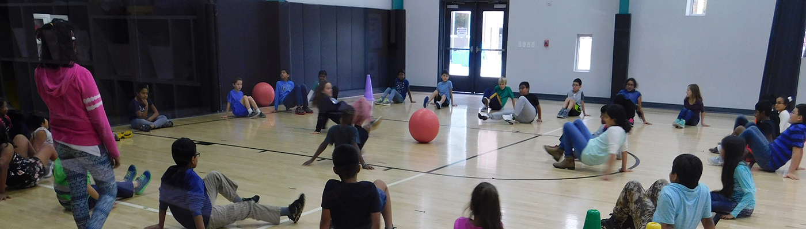
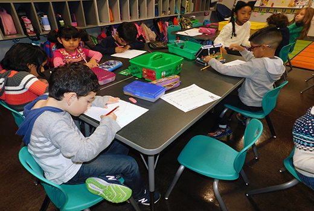
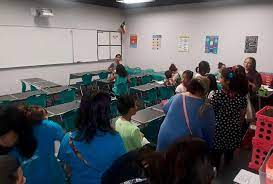

School
Opened in 2017
BASIS San Antonio Primary Medical Center opened in 2017 and serves over 750 students in grades K–5. It is also the sister school to BASIS San Antonio Primary North Central. Both schools are proud to promote their students to BASIS San Antonio Shavano for grades 6–12.
Our rigorous and accelerated curriculum engages students in hands-on, dynamic lessons across a well-balanced variety of courses, preparing them for success in middle school, high school, college, and beyond. We also emphasize respect and understanding by incorporating social and emotional growth objectives into our classes.
With our dedicated faculty, bright and driven students, and supportive community, BASIS San Antonio Primary Medical Center will continue to be a leader in elementary education in Texas for years to come.




Inside